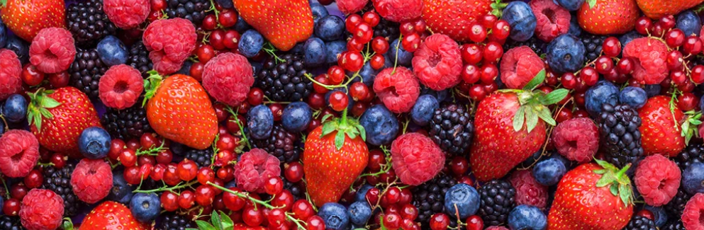
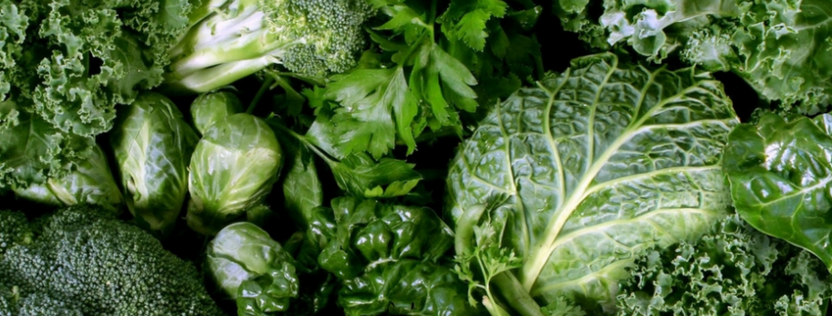
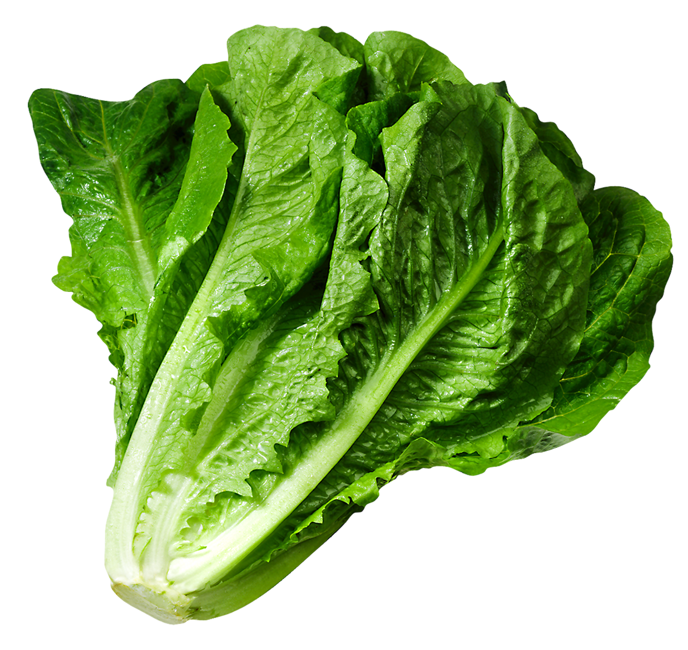
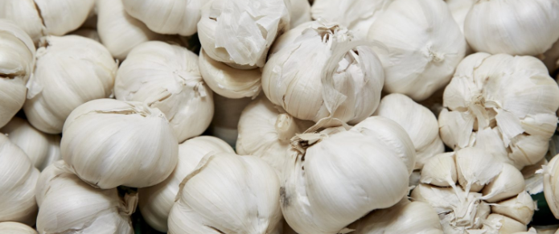
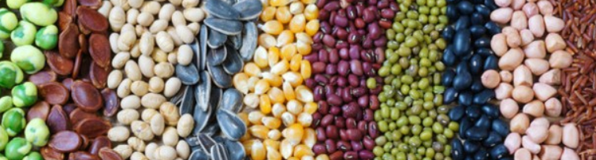
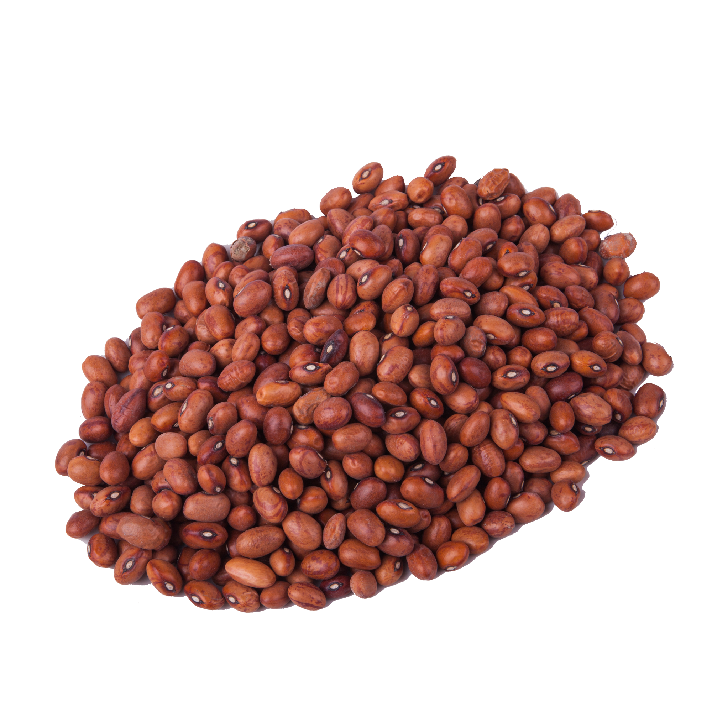

Berries

The strong antioxidant capacity of berries is associated with a reduced risk of heart disease,
cancer and other inflammatory conditions. Berries may also be effective in treating various
digestive and immune-related disorders when used alongside traditional medical therapies. Some
of the most common berries include:
Women who eat about two servings of strawberries or one serving of blueberries a week experienced
less mental decline over time than peers who went without these nutrition powerhouses, research
published in the Annals of Neurology found. In the study, researchers reviewed data from 16,010
women over age 70. Those with the highest berry intake postponed cognitive decline by about two
and
a half years. “We think that the effect might be related to a class of compounds called
anthocyanidins, which is a type of flavonoid," explains study author Elizabeth Devore, ScD, an
associate epidemiologist at Brigham and Women's Hospital and a professor at Harvard Medical
School
in Boston. "These compounds, found almost exclusively in berries, are known to cross the
blood-brain
barrier and locate in learning and memory centers in the brain."
Berries are sweet, but not the kind of sweet that should send people with diabetes running.
“Because
they come with fiber, they can use that in a diabetic diet as a serving of fruit,” Copperman
says.
In general, it’s better to eat fruit whole rather than drink juice, which is much higher in
sugar
and doesn’t contain fiber. And even though the health benefits of berries still count when they
are
included in another food, the nutrition boost is better when you choose fresh blueberries over a
blueberry pie or a muffin.
- Raspberries
- Strawberries
- Blueberries
- Blackberries
- Cranberries
Whether you enjoy them as part of your breakfast, as a dessert, on a salad or in a smoothie, the
health benefits of berries are as versatile as their culinary applications. There are two
specific
types of berries that characterize certain taxonomic groups. The leathery-rinded berry of citrus
fruits (genus Citrus) is called a hesperidium. The elongated tough-skinned fruits of the family
Cucurbitaceae, including watermelons, cucumbers, and gourds, are a type of berry referred to as
pepos. Any small fleshy fruit is popularly called a berry, especially if it is edible.
Raspberries,
blackberries, and strawberries, for example, are not true berries but are aggregate
fruits—fruits
that consist of a number of smaller fruits. Cranberries and blueberries, however, are true
botanical
berries.)
Dark Leafy Green


Part of what makes DGLVs so super is their potential to reduce your risk
of chronic illnesses including heart disease and type 2 diabetes. They also contain high levels
of anti-inflammatory compounds known as carotenoids, which may protect against certain types of
cancer (3Trusted Source).
Like all non-starchy vegetables,dark green vegetables are low in calories and high in fiber.
High-fiber foods promote the feeling of fullness and help lower cholesterol by binding it in the
gastrointestinal tract and “escorting” it out with bowel movements. They also help promote bowel
movement regularity and help manage constipation, a common side effect of pregnancy.
Also, high-fiber foods help control blood sugar by slowing the absorption of their naturally
occurring sugars into the blood stream. Blood sugar control is especially important for women
with or at risk for gestational diabetes. Dark green vegetables are good sources of vitamins A,
C, K and the B-vitamin folate, as well as the minerals iron and calcium.
Half of what we eat should be a variety of non-starchy vegetables and fruit. Of this, it is
recommended that each week we eat a minimum of 1 1/2 cups of dark green vegetables. In general,
1 cup of raw or cooked vegetables or vegetable juice, or 2 cups of raw leafy greens can be
considered as 1 cup. Some well-known DGLVs include:
- Kale
- Swiss chard
- Collard greens
- Turnip greens
- Spinach
Some DGLVs have a bitter taste and not everyone enjoys them plain. You can get creative by
including them in your favorite soups, salads, smoothies, stir-fries and curries. Great news
about greens - they are nutrient dense! That means they are low in calories and high in
nutrients. Leafy greens have about 10-35 calories per 125 mL (1/2 cup) cooked serving. They are
rich in folate, vitamin A, calcium and vitamin C. They also high in fibre, and naturally low in
fat and sodium.
Eggs
Whole eggs are rich in many nutrients including B vitamins, choline, selenium, vitamin A, iron
and
phosphorus. They’re also loaded with high-quality protein. Eggs contain two potent antioxidants,
zeaxanthin and lutein, which are known to protect vision and eye health. Despite fears
surrounding
egg consumption and high cholesterol, research indicates no measurable increase in heart disease
or
diabetes risk from eating up to 6–12 eggs per week. In fact, eating eggs could increase “good”
HDL
cholesterol in some people, which may lead to a favorable reduction in heart disease risk. More
research is needed to draw a definite conclusion. According to the United States Department of
Agriculture (USDA), one medium boiled or poached egg weighing 44 g can provide the following
nutrients:
Eggs are a very good source of inexpensive, high-quality protein. More than half the protein of
an
egg is found in the egg white, which also includes vitamin B2 and lower amounts of fat than the
yolk. Eggs are rich sources of selenium, vitamin D, B6, B12 and minerals such as zinc, iron and
copper. Egg yolks contain more calories and fat than the whites. They are a source of
fat-soluble
vitamins A, D, E and K and lecithin, the compound that enables emulsification in recipes such as
hollandaise or mayonnaise.
Some brands of egg now contain omega-3 fatty acids, depending on what the chickens have been fed
(always check the box). Eggs are regarded as a ‘complete’ source of protein as they contain all
nine
essential amino acids, the ones we cannot synthesise in our bodies and must obtain from our
diet.
A study published in Paediatrics magazine has suggested that giving young children just one egg a
day
for six months, alongside a diet with reduced sugar-sweetened foods, may help them achieve a
healthy
height and prevent stunting.
For years, eggs were considered more of a health risk than a healthy food. This is because they
were
considered a high-cholesterol food, so those with high cholesterol levels were advised to avoid
them. We now know that the cholesterol found in food has much less of an effect on our blood
cholesterol than the amount of saturated fat we eat. If you’ve been advised by your GP to change
your diet in an attempt to reduce your blood cholesterol levels, the best thing to do is to keep
to
daily guideline intakes for saturated fat (20g for the average woman and 30g for the average
man)
opting instead for monounsaturated fats found in olive and rapeseed oils. It’s also a good idea
to
increase your intake of vegetables, wholegrains, lean meats and low-fat dairy while minimising
sugars and refined carbs.
Eggs are rich in several nutrients that promote heart health, such as betaine and choline. A
recent
study of nearly half a million people in China suggests that eating one egg a day may reduce the
risk of heart disease and stroke, although experts stress that eggs need to be consumed as part
of a
healthy lifestyle in order to be beneficial.
Garlic


Garlic is a popular culinary ingredient due to its distinct flavor, but it has also been used for
its
medicinal benefits for centuries. Research indicates that garlic may be effective in reducing
cholesterol and blood pressure, as well as supporting immune function. What’s more,
sulfur-containing compounds in garlic may even play a role in preventing certain types of
cancer.
Fresh or crushed garlic yields the sulfur-containing compounds allicin, ajoene, diallyl
polysulfides,
vinyldithiins, S-allylcysteine, and enzymes, saponins, flavonoids, and Maillard reaction
products,
which are not sulfur-containing compounds. The phytochemicals responsible for the sharp flavor
of
garlic are produced when the plant's cells are damaged. When a cell is broken by chopping,
chewing,
or crushing, enzymes stored in cell vacuoles trigger the breakdown of several sulfur-containing
compounds stored in the cell fluids (cytosol). The resultant compounds are responsible for the
sharp
or hot taste and strong smell of garlic. Some of the compounds are unstable and continue to
react
over time. Among the members of the onion family, garlic has by far the highest concentrations
of
initial reaction products, making garlic much more potent than onion, shallot, or leeks.
Although
many humans enjoy the taste of garlic, these compounds are believed to have evolved as a
defensive
mechanism, deterring animals such as birds, insects, and worms from eating the plant. Because of
this, people throughout history have used garlic to keep away pests such as mosquitoes and slug.
A large number of sulfur compounds contribute to the smell and taste of garlic. Allicin has been
found to be the compound most responsible for the hot sensation of raw garlic. This chemical
opens
thermo-transient receptor potential channels that are responsible for the burning sense of heat
in
foods. The process of cooking garlic removes allicin, thus mellowing its spiciness. Allicin,
along
with its decomposition products diallyl disulfide and diallyl trisulfide, are major contributors
to
the characteristic odor of garlic, with other allicin-derived compounds, such as vinyldithiins
and
ajoene. Because of its strong odor, garlic is sometimes called the stinking rose. When eaten in
quantity, garlic may be strongly evident in the diner's sweat and garlic breath the following
day.
This is because garlic's strong-smelling sulfur compounds are metabolized, forming allyl methyl
sulfide. Allyl methyl sulfide (AMS) cannot be digested and is passed into the blood. It is
carried
to the lungs and the skin, where it is excreted. Since digestion takes several hours, and
release of
AMS several hours more, the effect of eating garlic may be present for a long time.
The well-known phenomenon of garlic breath is allegedly alleviated by eating fresh parsley. The
herb
is, therefore, included in many garlic recipes, such as pistou, persillade, and the garlic
butter
spread used in garlic bread. Because of the AMS in the bloodstream, it is believed by some to
act as
a mosquito repellent, but no clinically reported evidence suggests it is actually effective.
Abundant sulfur compounds in garlic are also responsible for turning garlic green or blue during
pickling and cooking. Under these conditions (i.e. acidity, heat) the sulfur-containing compound
alliin reacts with common amino acids to make pyrroles, clusters of carbon-nitrogen
rings.[31][32]
These rings can be linked together into polypyrrole molecules. Ring structures absorb particular
wavelengths of light and thus appear colored. The two-pyrrole molecule looks red, the
three-pyrrole
molecule looks blue, and the four-pyrrole molecule looks green (like chlorophyll, a
tetrapyrrole).
Like chlorophyll, the pyrrole pigments are safe to eat. Upon cutting, similar to a color change
in
onion caused by reactions of amino acids with sulfur compounds,[34] garlic can turn green
Ginger

Ginger root contains antioxidants, such as gingerol, that may be responsible for many of the
reported
health benefits associated with this food. Ginger may be effective for managing nausea and
reducing
pain from acute and chronic inflammatory conditions. It may also reduce your risk of chronic
illnesses such as heart disease, dementia and certain cancers. Ginger is available fresh, as an
oil
or juice and in dried/powdered forms. It’s easy to incorporate into soups, stir-fries, sauces
and
teas. Historically, ginger has a long tradition of being very effective in alleviating symptoms
of
gastrointestinal distress. In herbal medicine, ginger is regarded as an excellent carminative (a
substance which promotes the elimination of intestinal gas) and intestinal spasmolytic (a
substance
which relaxes and soothes the intestinal tract). Modern scientific research has revealed that
ginger
possesses numerous therapeutic properties including antioxidant effects, an ability to inhibit
the
formation of inflammatory compounds, and direct anti-inflammatory effects.
Several studies have investigated ginger’s effects on the gasses that form in the intestinal
tract
during digestion. Some research indicates that enzymes in ginger can help the body break up and
expel this gas, providing relief from any discomfort. Ginger also appears to have beneficial
effects
on the enzymes trypsin and pancreatic lipase, which are important for digestion. In addition,
ginger
may help increase movement through the digestive tract, suggesting that it may relieve or
prevent
constipation.
Some research indicates that ginger can help alleviate morning sickness and relieve nausea
following
cancer treatment. One small study from 2010 examined the effects of ginger root powder
supplements
on nausea in 60 children and young adults who underwent chemotherapy. The analysis showed that
the
supplement led to reduced nausea in most of the people who took it. Authors of a 2011 review of
studies arrived at similar conclusions. They reported that taking a divided daily dosage of
1,500
milligrams (mg) of ginger extract helped alleviate symptoms of nausea. They also called for
further
studies in humans to fully understand the effects of ginger on nausea and other gastrointestinal
issues
Many people use ginger to help recover from a cold or the flu. However, the evidence supporting
this
remedy is mostly anecdotal. In 2013, researchers studied the effects of fresh and dried ginger
on
one respiratory virus in human cells. The results indicated that fresh ginger may help protect
the
respiratory system, while dried ginger did not have the same impact. Also in 2013, a small study
set
out to investigate the popularity of herbal medicine as a cold or flu treatment. After polling
300
pharmacy customers in two different locations, the researchers determined that 69% of those
polled
used herbal medicine and that most of this group found it effective. However, while ginger was
among
the most popular ingredients in these remedies, some of the participants may not have used it.
Green Tea
EGCG is likely what gives green tea its apparent ability to protect against chronic diseases
including heart disease, diabetes and cancer Research also indicates that the combination of
catechins and caffeine in green tea may make it an effective tool for weight loss in some people
Regular green tea is 99.9% water, provides 1 kcal per 100 mL serving, is devoid of significant
nutrient content (table) and contains phytochemicals, such as polyphenols and caffeine.
Numerous claims have been made for the health benefits of green tea, but human clinical research
has
not found good evidence of benefit. In 2011, a panel of scientists published a report on the
claims
for health effects at the request of the European Commission: in general they found that the
claims
made for green tea were not supported by sufficient scientific evidence. Although green tea may
enhance mental alertness due to its caffeine content, there is only weak, inconclusive evidence
that
regular consumption of green tea affects the risk of cancer or cardiovascular diseases, and
there is
no evidence that it benefits weight loss. Although using green tea as a health supplement green
tea
is associated with a slight improvement in overall quality of life, it is also associated with
some
potential adverse effects. A 2020 review by the Cochrane Collaboration listed these as
gastrointestinal disorders, higher levels of liver enzymes, and, more rarely, insomnia, raised
blood
pressure and skin reactions
According to the National Cancer Institute, the polyphenols in tea have been shown to decrease
tumor
growth in laboratory and animal studies and may protect against damage caused by ultraviolet UVB
radiation. In countries where green tea consumption is high, cancer rates tend to be lower, but
it
is impossible to know for sure whether it is the green tea that prevents cancer in these
particular
populations or other lifestyle factors.
A 2006 study published in the Journal of the American Medical Association concluded that green
tea
consumption is associated with reduced mortality due to all causes, including cardiovascular
disease. The study followed over 40,000 Japanese participants between the ages of 40 and 79 for
11
years, starting in 1994. The participants who drank at least 5 cups of green tea per day had a
significantly lower risk of dying (especially from cardiovascular disease) than those who drank
less
than one cup of tea per day.
An analysis of published studies in 2011 found that consuming green tea, either as a beverage or
in
capsule form, was linked to significant but modest reductions in total and LDL or “bad”
cholesterol.
Drinking green tea or coffee on a regular basis is associated with a reduced risk of stroke,
according to a study published in the journal Stroke: Journal of the American Heart Association.
The
lead author of the study, Dr. Yoshihiro Kokubo, Ph.D., said, “This is the first large-scale
study to
examine the combined effects of both green tea and coffee on stroke risks. You may make a small
but
positive lifestyle change to help lower the risk of stroke by adding daily green tea to your
diet.”
Kefir and Yogurt
Kefir is similar to yogurt but has a thinner consistency and typically more probiotic strains
than
yogurt. Fermented, probiotic-rich foods like kefir have several associated health benefits,
including reduced cholesterol, lowered blood pressure, improved digestion and anti-inflammatory
effects. Though kefir is traditionally made from cow’s milk, it’s typically well tolerated by
people
with lactose intolerance due to the fermentation of the lactose by bacteria. However, it’s also
made
from non-dairy beverages such as coconut milk, rice milk and coconut water. You can purchase
kefir
or make it yourself. If you’re choosing a commercially prepared product, be mindful of added
sugar
Yogurt is a popular dairy product that's made by the bacterial fermentation of milk. The bacteria
used to make yogurt are called "yogurt cultures," which ferment lactose, the natural sugar found
in
milk. This process produces lactic acid, a substance that causes milk proteins to curdle, giving
yogurt its unique flavor and texture. Yogurt can be made from all types of milk. Varieties made
from
skim milk are considered fat-free, whereas those made from whole milk are considered full-fat.
Plain
yogurt without added colorants is a white, thick liquid with a tangy flavor. Unfortunately, most
commercial brands contain added ingredients, such as sugar and artificial flavors. These yogurts
are
not good for your health. On the other hand, plain, unsweetened yogurt offers many health
benefits.
Less is more when it comes to choosing a healthy yogurt. Plain, unsweetened varieties are best,
since
they contain minimal ingredients without any added sugar. Whether you choose low- or full-fat
yogurt
is a personal choice. Full-fat varieties contain more calories, but that doesn't mean that
they're
unhealthy. Just make sure to stick with the recommended portion size. You should also look for
yogurts that contain live and active cultures to ensure you get your fix of health-promoting
probiotics.
Whether yogurt is a healthful choice depends on the person consuming it and the type of yogurt.
Yogurts can be high in protein, calcium, vitamins, and live culture, or probiotics, which can
enhance the gut microbiota. These can offer protection for bones and teeth and help prevent
digestive problems. Low-fat yogurt can be a useful source of protein on a weight-loss diet.
Probiotics may boost the immune system.
Legumes


They earn the superfood label because they’re loaded with nutrients and play a role in preventing
and
managing various diseases. Legumes are a rich source of B vitamins, various minerals, protein
and
fiber. Research indicates that they offer many health benefits including improved type 2
diabetes
management, as well as reduced blood pressure and cholesterol.
Eating beans and legumes regularly may also promote healthy weight maintenance, due to their
ability
to improve feelings of fullness. Legumes are a good source of protein, iron, and zinc typically
found in animal products such as chicken or beef. They also are high in fiber, folate, and
potassium. For example, 1 serving (1/4 cup) of legumes provides 20 percent of the daily
recommended
amount of fiber for adults.
In addition, lignans, saponins, flavonoids, and sterols are phytochemicals in legumes that are
associated with a lower risk of cancer. Other data show that bacteria in the digestive tract
feed on
fiber, which produces compounds that may protect cells of the colon. Because legumes contain
insoluble fiber that slow digestion and release carbohydrate more gradually that some other
foods,
they tend to help keep blood sugar levels even. A study of 121 people with type 2 diabetes
showed
that consuming 1 cup of legumes each day as part of a lower glycemic index diet lowered blood
sugar
levels. For these reasons, the American Diabetes Association (ADA) lists legumes among the top
10
superfoods for people with diabetes
One of the main advantages of legumes is that they don't contain much saturated fat, unlike red
meat.
Saturated fat in high amounts may contribute to cardiovascular disease, so experts recommend
limiting intake to 20 grams per day for a 2,000-calorie-a-day diet, less if your calorie intake
is
lower. But legumes are a great choice based not only on what they lack, but what they contain.
Legumes are a good source of plant protein — half a cup of cooked beans provides between 6 and 9
grams — and they're packed with other nutrients, such as folate, calcium, potassium, zinc, B
vitamins, and antioxidants. They also contain lots of fiber, which can help you avoid
constipation
and may reduce your risk of cardiovascular disease.
If you didn't grow up eating beans, you may not know where to start when it comes to adding them
to
your diet. Consult the experts. "There are a ton of really good vegetarian cookbooks that
include
wonderful different bean dishes," says Dr. Stampfer. "People often think of beans only as a bowl
of
baked beans, but there is really so much more you can do with them."
Beans typically come dried, canned, or frozen, and they can be easily added to many dishes you
probably already eat. For example, chickpeas and other types of beans can be slipped into soups
and
pasta or blended into a creamy hummus dip for fresh vegetables. Trade the beef in your burrito
for
beans, or skip your usual roast beef sandwich and opt for peanut butter instead. Grab a handful
of
peanuts as a quick snack and even add some beans into your breakfast by mixing them into your
breakfast of scrambled eggs along with some chopped vegetables.
Nuts and Seeds
Nuts and seeds make up an important part of a healthy diet. Both types of food help you reach
your
recommended intake of protein each day, as well as count toward your daily fat allowance. Seeds
and
nuts benefit your health because they offer key essential nutrients and play a role in disease
prevention by keeping you healthy as you age.
Nuts and seeds benefit your health by providing a source of dietary fiber. Fiber is a specialized
type of carbohydrate found in plant-based foods. It does not break down as it passes through
your
digestive tract, and the undigested fiber adds bulk to your stool to promote regular bowel
movements. Fiber also helps slow the rate of digestion. This means that sugar from your meal
enters
your bloodstream slowly, leading to a gradual rise in blood sugar that leaves you feeling
energized
after you eat. Opt for flax seeds as an excellent source of fiber -- an ounce of the seeds
contains
a whopping 7.7 grams. An ounce of almonds boosts your fiber intake by 3.5 grams, while sunflower
seeds contain 3.1 grams of fiber per ounce. An equivalent an serving of pistachios and pecans
offers
2.9 and 2.7 grams, respectively.
Nuts and seeds also pack various plant compounds with anti-inflammatory and antioxidant
properties,
which can protect against oxidative stress. Research indicates that eating nuts and seeds can
have a
protective effect against heart disease. Common nuts and seeds include:
- Almonds, pecans, pistachios, walnuts, cashews, Brazil nuts, macadamia nuts
- Peanuts — technically a legume, but often considered a nut
- Sunflower seeds, pumpkin seeds, chia seeds, flaxseeds, hemp seeds
Interestingly, even though nuts and seeds are calorically dense, some types of nuts are linked to
weight loss when included in a balanced diet.\n\n" +
"Overall, nuts have very similar macronutrient (protein, carbohydrate and fat) profiles, but
different types of nuts may have slightly different micronutrient (vitamin and mineral)
content.\n\n" +
"Nuts have about 29 kJ of energy per gram, and are:
- high in monounsaturated fats (most nut types) and polyunsaturated fats (mainly walnuts)
- low in saturated fats
- good sources of dietary protein, hence a good alternative to animal proteins. Some nuts are
also
high in amino acid arginine, which keeps blood vessels healthy
- free of dietary cholesterol
- high in dietary fibre
- rich in phytochemicals that act as antioxidants
- rich in vitamins E, B6, niacin and folate; and they provide minerals such as magnesium,
zinc,
plant iron, calcium, copper, selenium, phosphorus and potassium
Olive Oil
It’s biggest claims to health are its high levels of monounsaturated fatty acids (MUFAs) and
polyphenolic compounds. Adding olive oil to your diet may reduce inflammation and your risk of
certain illnesses such as heart disease and diabetes. It also contains antioxidants such as
vitamins
E and K, which can protect against cellular damage from oxidative stress.\n\n" + Limited and not
conclusive scientific evidence suggests that eating about 2 tbsp. (23 g) of olive oil daily may
reduce the risk of coronary heart disease due to the monounsaturated fat in olive oil. To
achieve
this possible benefit, olive oil is to replace a similar amount of saturated fat and not
increase
the total number of calories you eat in a day Many studies have looked at the health benefits of
olive oil. Extra virgin olive oil, which is the best quality oil available, is rich in
antioxidants,
which help prevent cellular damage caused by molecules called free radicals.
Free radicals are substances that the body produces during metabolism and other processes.
Antioxidants neutralize free radicals.\n\n" + If too many free radicals build up, they can cause
oxidative stress. This can lead to cell damage, and it may play a role in the development of
certain
diseases, including certain types of cancer. Olive oil is the main source of fat in the
Mediterranean diet. People who consume this diet appear to have a higher life expectancy,
including
a lower chance of dying from cardiovascular diseases, compared with people who follow other
diets.
Some experts call it “the standard in preventive medicine. A 2018 study compared the number of
cardiovascular events among people who consumed a Mediterranean diet, either with olive oil or
nuts,
or a low-fat diet. People who consumed the Mediterranean diet, whether with olive oil or nuts,
had a
lower incidence of cardiovascular disease than those on the low-fat diet.
According to the authors of one 2018 review, the Food and Drug Administration (FDA) and the
European
Food Safety Authority recommend consuming around 20 grams (g) or two tablespoons (tbs) of extra
virgin olive oil each day to reduce the risk of cardiovascular disease and inflammation. Results
of
a 2017 study suggested that the polyphenols in extra virgin olive oil may offer protection from
cardiovascular disease, atherosclerosis, stroke, brain dysfunction, and cancer. Polyphenols are
a
type of antioxidant. Metabolic syndrome is a condition characterized by a group of risk factors
that
increase disease risk, including obesity, high blood pressure, and high blood sugar levels.
Authors
of a 2019 meta-analysis concluded that olive oil in a Mediterranean diet might improve features
of
metabolic syndrome, such as inflammation, blood sugar, triglycerides (fats in the blood), and
low-density lipoprotein (LDL), or “bad” cholesterol. In contrast, it appears to increase levels
of
high-density lipoprotein (HDL), or “good” cholesterol